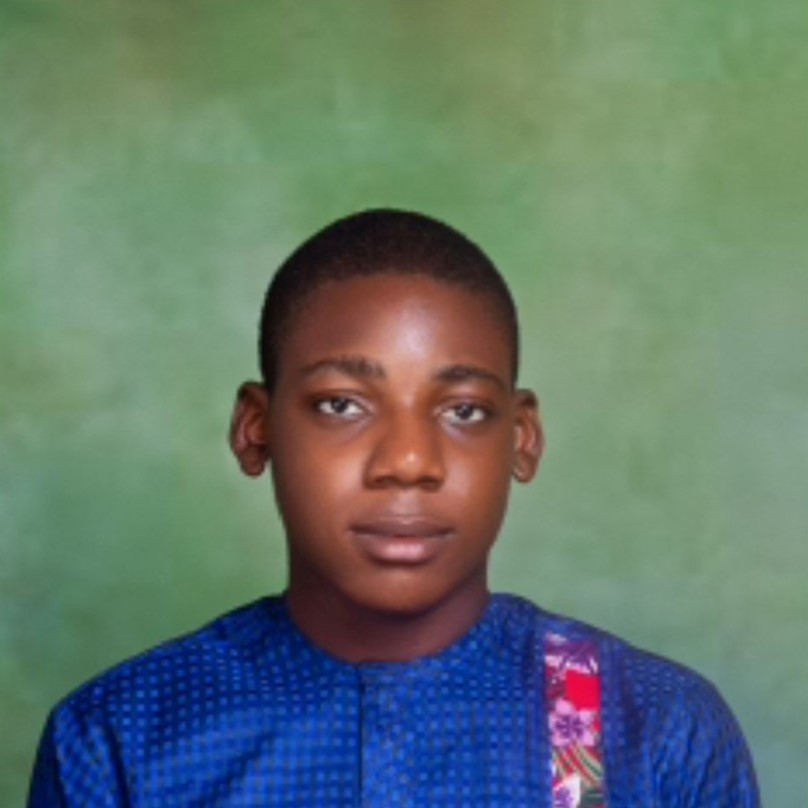

About Me
Welcome to my journey in the world of technology and web development!
Hello! I'm David, a passionate and dedicated full-stack web trainee currently enrolled in the Innovation Development and Effectiveness in the Acquisition of Skills (IDEAS) program. This incredible opportunity, sponsored by the World Bank and the Ministry of Education, and organized by Spotless Digital Technologies Limited, has been a transformational experience for me.
My Background
With a little background in Computer Science, I decided to pivot into the tech industry to pursue my passion for creating innovative solutions. The IDEAS program has provided me with the perfect platform to develop my skills and knowledge in full-stack web development.
My Journey
From mastering front-end technologies like HTML, CSS, and JavaScript to diving deep into back-end development with Node.js, Express, and MongoDB, my journey has been both challenging and rewarding. Each lesson and assignment has pushed me to apply what I've learned, fostering both my technical skills and problem-solving abilities.
My Vision
As I continue to grow and learn, my vision is to leverage my skills to build web applications that make a positive impact on society. I am particularly interested in developing solutions that improve healthcare access, enhance educational opportunities, and streamline business processes.
Get in Touch
If you'd like to connect or learn more about my journey, feel free to reach out! I'm always open to new opportunities and collaborations.